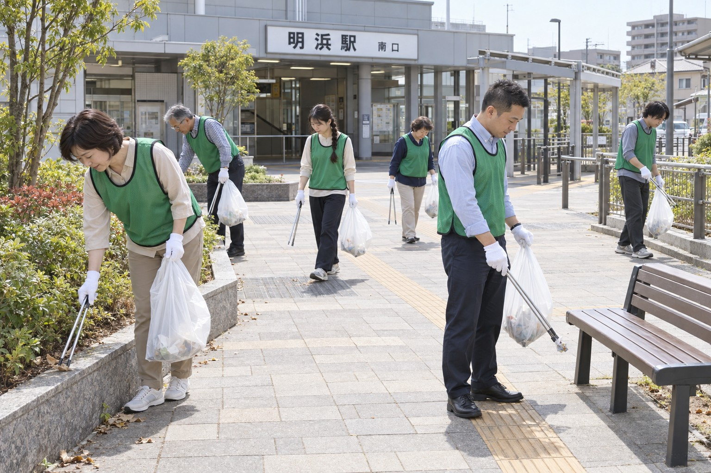
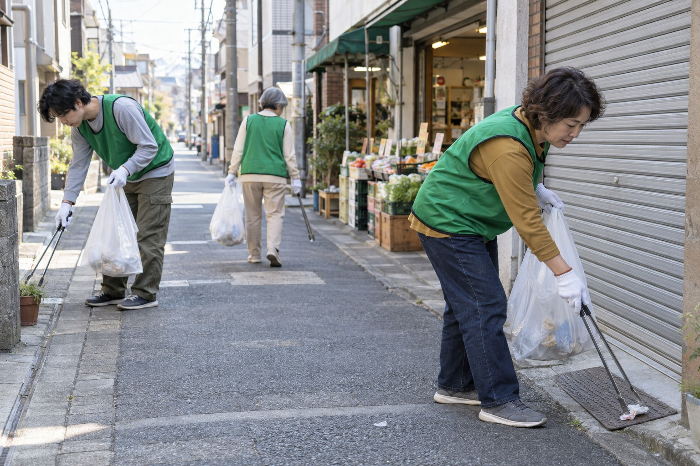
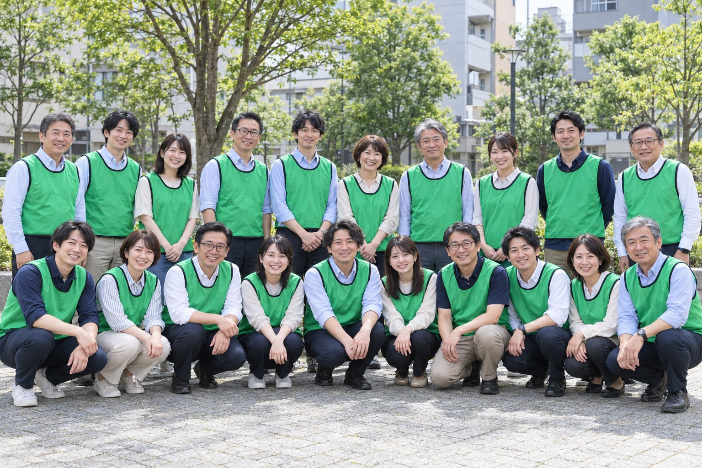

明浜みどり公園
COMMUNITY RELATIONS
地域連携の取り組み
働く街を、暮らしやすい街に。
明浜の皆さまと、身近な活動を続けています。
OUR COMMUNITY
明浜に拠点を置く企業として。
TIME BACK事業センターでは、近隣の皆さまとの関わりを大切にしています。明浜商店街振興会と協力し、社員が公園や駅周辺、商店街の清掃活動に参加しています。普段利用する道や場所を自分たちの手で整えることから、地域との関係を育んでいます。
明浜商店街振興会との協力
商店街の店舗が協力して、街路の美化や地域の催しを支える明浜商店街振興会。TIME BACK事業センターは、活動場所や作業内容を振興会と相談し、地域の予定に合わせて社員の参加を調整しています。店舗の営業や住民の皆さまの通行を妨げないことを、共通の方針としています。
ACTIVITIES
日常の場所を、少しずつ整える。
振興会の皆さまと作業範囲を確認し、季節や現地の状況に応じて取り組んでいます。
明浜駅南口周辺
人の往来に配慮した歩道の清掃
駅南口から周辺の歩道にかけて、空き缶や紙くずなどを回収しています。通勤・通学で混み合う時間帯を避け、歩道をふさがないよう作業範囲を分けて実施します。自転車や通行人に注意し、車道へ出ての作業は行いません。

明浜商店街
店舗の皆さまと進める環境美化
開店準備や荷物の搬入に支障が出ない時間帯を相談し、店舗前の歩道や共用の通路を清掃しています。地域の催しの後には、振興会の案内に沿って周辺のごみ拾いや片付けにも協力します。作業を通じて、街の使われ方や季節ごとの変化に触れる機会にもなっています。

PARTICIPATION
無理なく、安全に続けるために。
清掃活動への参加は社員の希望に基づいています。当日は作業内容と注意事項を共有し、軍手やごみ袋などの用具を用意します。雨天や高温など、屋外での作業に適さない場合は、日程を変更するか実施を見送ります。
活動後は回収物や気付いた点を振興会と共有し、次回の作業に生かしています。大きな催しに限らず、日々の小さな協力を重ねながら、地域の皆さまと長く関わっていきます。
